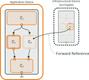

Deployment Models for Collective-Adaptive Systems
The Gap
Typical collective-adaptive systems (CAS) are deployed as if only physical devices mattered, leaving the rest of the infrastructure unused.
The edge-cloud continuum opens new deployment opportunities for CAS, enabling more dynamic and sophisticated deployments.
- Current methods struggle to map swarm logic onto heterogeneous, distributed hardware.
- Runtime reconfiguration lacks principled, function-preserving models.


How can we exploit the continuum infrastructure for efficient and adaptive deployments?
The Pulverisation Model
A declarative approach to breaking down monolithic systems into computationally independent components.


This model exploits surrogates, i.e., infrastructural devices used to offload components, preserving the functional equivalence of the system while improving non-functional properties.

Offloading computationally heavy components reduces device power consumption, leading to greener deployments and enabling complex deployments that would otherwise be impossible with only thin edge devices.
Real-world Self-Organisation
The model is evaluated in a swarm-robotic demonstrator, where an edge server is used to offload the collective behaviour of the system.
- The approach moves from simulated collective behaviour to deployable systems aware of the surrounding infrastructure.
- It exploits edge-cloud execution to coordinate robots and surrogates, enabling scalable deployments beyond robot-only fleets.
Impact
This bridges the gap between simulation and real-world deployments with a formally validated, function-preserving deployment model.